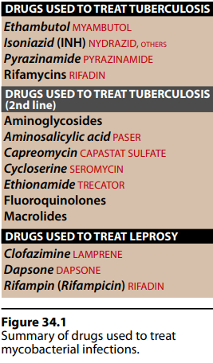

I.Overview
→ slender,rod-shaped bacteria
- lipid-rich cell walls
- which cannot easily decolorized by treatment with acidified organic solvents
- so called "acid-fast"
— other tuberculosis-like human infenction
- which is responsible for tissue destruction
II.Chemotherapy for tuberculosis
→ Mycobacterium tuberculosis
- infecntions in the lung , genitourinary tract , skeleton , meninges
- grows slowly [6 months - 2 years]
II.A.Strategies for adressing drug resistance
→ multidrug therapy is emloyed
- delay or prevent mergence of resistant straints
- Isoniazid , rifampin ( rifabutin rifafpentine) , ethambutol , pyrazinamide → "first-line" drugs
- minimum of two drugs [preferably both being bactericidical]
[e.g. // short course chemotherapy for tuberculosis includes [isoniazid,rifampin,ethambutol,prazinamide for 2 months
and then isoniazid , rifampin for the next 4 moths.
→ drugs added usually include
- aminoglycosides (streptimycin,kanamycin,amikacin) or capreomycin(injection)
- fluoroquinole
- and perhaps a "second-line" antituberculosis agents such as
- cycloserine, ethionamide , p-aminosalicylic acid
II.B.ISONIAZID [INH]
→ hydrazide of isonicotinic acid is a synthetic analogue of pyridoxine
- the most potent of the antitubercular drugs
- never given as a single agent in the treatment
1.MECHANISM OF ACTION
→ pro-drug
- activated by a mycobacterial catalase-peroxidase (KatG)
- implicate mycolic acid production by catazyling enzymes invlovled in this process
↓ mycolic acid synthesis → loss of acid-fastness after exposure to isoniazide.]
→ target enzymes are
- enoyl acyl carrier protein reductase (InhA)
- β-ketoacyl-ACP synthase (KasA)
- covalently binds to and inhibit threse enzymes
- which are essential for the synthesis of mycolic acid
→ for bacilli in the stationary phase → bacteriostatic
→ rapidly dividing organism → bactericidal
→ effective against intracellular bacteria
→ specific treatment of M.turbeculosis [M.kansassi]
3.RESISTANCE
→ several different chromosomal mutations
- mutation or delation of KatG[incapable of prodrug activation]
4.PHARMACOKINETICS
→ ORALLY readily absorbed.
- it is impaired with food [especially with carbohydrates] , aluminum-containig antacids
→ penetrates host cells and is effective against baciili growing intracellular
→ drug is undergoes N-acetylation and hydrolysis → inactive products
→ excretion is through glomerrual filtration
5.ADVERSE EFFECT
→fairly low
- hypersensitivity
→ hepatitis and idiosyncratic hepatotoxicity
→ also inhibits metabolism of phenytoin.
→ mental abnormalities, convulsions, seizures ,optic neuritis
II.C. RIFAMYCINS : Rifafmpin , Rifabutin , Rifapentine
→ Rifampin , rifabutin , rifapentine
→ group of structually similar macrocyclic antibiotics
- first-line drugs for tuberculosis
- must always used with conjuction with at least one other antiturbeculosis.
II.1.RIFAMPIN
→ derived from the soil mold Streptomyces
→ broader antimicrobial activity than isoniazid
→ rapidly emerge during therapy
- never given as a single agent in the treatment of the active tuberculosis.
→ blocks trascription by interacting with the β-subunit of bacterial
- DNA-dependent RNA polymerase[drug is specific for prokaryotes]
B.ANTIMICROBIAL SPECTRUM
→ bactericidal for both
- intra/extre cellular mycobacteria
- inluding M.tuberculosis and atypical mycobacteria such as M.kansassi
- effective against G+ and G-
- prophylactically for individual exposed to meningitis by [menigococci or Haemophilus influenzae]
- usually given in combination with other drugs
II.2.RIFABUTIN
→ analog of rifampin
- has some activity Mycobacterium avium-intrecellulare complex
- but less active against tuberculosis
→ by mutation in the affinity of the bacterial DNA-dependednt RNA polymerase for the drug
- or by decreased permability.
→ absorption
- is adequate after oral admin.
- to all body fluids and organs
- CFS [even in the absence of inflammation]
- by the liver and udergoes enterohepatic cycling
- can induce the hepatic mixed-function oxidases. → shortened half-life & numerous drug interaction
- bile into the feces[orange-red colour] or
- the urine
→ generally well tolerated
→ nausea , vomiting and rash.
→ dose intermittently or
- in daily dose of 1.2 grams or greater [flu-like syndrome]
→ can induce a number of cytochrome p450 enzymes
- ↓ half-lives of other drugs admin. and metabolized by the system
II.3.RIFAPENTINE
→ activity compared to that of rifampin
- but has longer half-life than rifampin/rifabutin
- which permits weekly dosing
- short-course therapy for tuberculosis [twich weekly]
- dose once per week for 4 months.
- shoud not used alone
II.D.PYRAZINAMIDE
→ synthetic orally
→ effective bactericidal[to actively dividign organism] → antituberculosis agents
- used in combination with isonazid,rifampin,ethambutol
→ must be enzymataically hydrolyzed to
- pyrazinoic acid [the active form of the drug]
- tubercle bacilli in the acidic enviroment of lysosomes and macrophages
- penatrating CFS
- 5% of patients taking isoniazid,rifampin and pyrazinamide
- liver dysfunction
II.E.ETHAMBUTOL
→ bacteriostatic
- M.tuberculosis , M.kanasassi
- arabionosyl tranferase
- an enyzme that is important for the synthesis of the mycobacterial arabinogalactan cell wall
- pyrazinamide , isoniazid , rafampin to treat tuberculosis.
→ penetration on the CNS is therapeutically adequate.
→ excrected by
- glomelurar filatration
- tubular secretion
- diminished visual activity [ red and green discrimination]
- reversal of the optic syndromes.
II.F.Alternate Second-line drugs
→ streptomycin , para-aminosalicylic acid , ethionamide , cycloserine , capreomycin , fluoroquinolones and macrolides.
→ considered to be 2n line of therapy either because
- are no more effective than the first-line agents
- toxicities are often more serious
- active against atypical straings of mycobacteria
II.F.1.STREPTOMYCIN
→ 1st antibiotic effective in the treatment of "tuberculosis"
→ action is directed agaist extracellular organism
→ in case of resistance
- kanamycin or amikacin can be used
II.F.2.CAPREOMYCIN
→ peptide that inhibits protein synthesis
→ admin. parentally
→ primarly reserved for the treatment of multidrug-resistant tuberculosis.
II.F.3.CYCLOSERINE
→ effective tuberculostatic agent
- antagonize the steps in bacerial cell wall synthesis involing D-alanine.
→ metabolized and both parent+metabolite are excrected in the urine
→ accumulation occurs
- renal insufficiency
- epilecptic seizuresa activity
- peripheral neuropathies
II.F.4.ETHIONAMIDE
→ structual analog of isoniazid
- can inhibit acetylation of isoniazid
- effective after oral administration
- widely distributed throughout the body including CFS
- urine [main route]
[supplementation with vitamain B6(pyridoxine) may lessen the severity of the neurologic side effects.
II.F.5.FLUOROQUINOLONES
→ ciprofloxacin , azithromycin
- part of therapy regime that incldes
- ethambutol and rifabutin
- used for the treatment of infenciton by M.avium-intracellulare complex.
→ interfere with the metabolism of antiretrovial drugs.
III.CHEMOTHERAPY FOR LEPROSY (Hansen's diseae)
→ 70% of all cases in the world are located in India
→ bacilli from skin lesions or nasal discharges of infected patients enters susceptible individuals via
- abraded skin or the repsiratory tract
- dapsone,clofazimine rifampin for 6to24months.
III.A.Dapsone
→ structually related to the sulfonamides
→ inhibits folate synthesis
- dihydropteroate synthase inhibtion
→ well absorbed from the GIT
- distributed thought the body with high levels on the skin
→ eliminated in urine
→ hemolysis
- especially in patients with glucose-6-phosphate deydrogensae deifcieny
III.B.CLOFAZIMINE
→ phenazine dye that bind to DNA and prevents it from serving as a template for future DNA replicaton.
- redox properties → generation of cytotoxic oxygen radicals(also toxic to bacteria)
- M.leprae
- some activity against M.avium-intracellular complex
- accumulates in tissues
- allowing intermittent therapy
- does not enter CNS
- red-brown discoloration of the skin.
{kind=link}